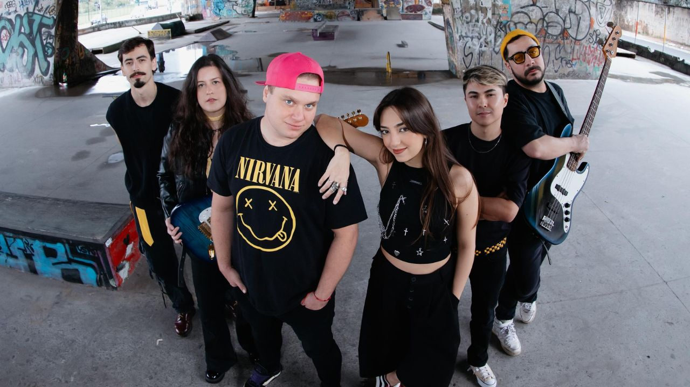

“Rock na Broadway” faz primeira edição no Rio com Lara Suleiman e Arthur Berges

Após três edições esgotadas em São Paulo, show chega ao Solar de Botafogo em apresentação única no dia 1º de agosto
Depois de três edições com ingressos esgotados em São Paulo, “Rock na Broadway” chega pela primeira vez ao Rio de Janeiro. Idealizado, produzido e protagonizado por Lara Suleiman e Arthur Berges, o show será apresentado em sessão única no dia 1º de agosto, no Solar de Botafogo.
O projeto aproxima grandes sucessos do teatro musical e clássicos do rock em arranjos inéditos, com banda ao vivo e participações especiais. A proposta é colocar repertórios conhecidos de universos diferentes em diálogo, sem tratar a Broadway e o rock como territórios separados.
Com direção musical de Felipe Sushi, o espetáculo reúne canções de musicais como “Wicked”, “Meninas Malvadas” e “Mamma Mia!”, em versões inspiradas pelo rock, além de clássicos do gênero. Entre os números previstos estão “Defying Gravity”, “Apex Predator”, “Mamma Mia” e “Basket Case”.
A ideia nasceu da vontade de Lara e Arthur de desenvolver um projeto autoral para além dos personagens vividos nos palcos. A parceria tomou forma durante a temporada de “Meninas Malvadas”, em 2025, quando os dois interpretaram Janis e Damian e identificaram afinidades artísticas em torno da música, do teatro musical e da performance ao vivo.
À frente do projeto, Lara Suleiman e Arthur Berges fazem parte de uma geração de artistas que transita entre teatro musical, canto, dublagem e criação autoral. Os dois já dividiram o palco em “Meninas Malvadas” e “Jersey Boys”.
Lara conquistou o Prêmio Destaque Imprensa Digital por sua atuação em “Meninas Malvadas” e integrou produções como “Beetlejuice”, “Uma Babá Quase Perfeita”, “A Família Addams”, “Les Misérables”, “Bonnie & Clyde”, “tick, tick... BOOM!” e “A Noviça Rebelde”.
Arthur protagonizou a montagem brasileira de “Escola do Rock”, trabalho pelo qual também recebeu o Prêmio Destaque Imprensa Digital, além de integrar elencos de “Rent”, “Uma Linda Mulher”, “Urinal”, “Natasha, Pierre e o Grande Cometa de 1812”, “Um Violinista no Telhado”, “Ursinho Pooh, da Disney: O Novo Musical” e “Se Essa Lua Fosse Minha”.
“Durante muitos anos, me comuniquei com o público através das personagens que interpretei. O ‘Rock na Broadway’ nasceu da vontade de subir ao palco como artista, levando comigo todas as referências que construíram a minha trajetória”, afirma Lara Suleiman.
A construção musical acontece de forma colaborativa. Lara participa da criação vocal, incluindo harmonizações e mashups, enquanto Arthur atua no desenvolvimento dos arranjos ao lado de Felipe Sushi e do baterista Bruno Galhardi. A banda conta ainda com Léo Versolato e Gabi Suyama.
Desde sua segunda edição, “Rock na Broadway” passou a ser pensado também como uma experiência de encontro com o público. Além do show, o projeto inclui ambientação temática, ativações, produtos exclusivos e meet and greet com os artistas ao final da apresentação.
A edição carioca mantém essa proposta e contará com participações especiais, ainda a serem anunciadas pela produção. A ideia é que cada apresentação tenha combinações próprias de repertório, convidados e arranjos, preservando o caráter de evento único.
“O mais bonito é perceber que o ‘Rock na Broadway’ deixou de ser apenas uma ideia ou um show e se transformou em uma comunidade. As pessoas voltam porque querem reviver aquela energia, cantar junto, descobrir novos arranjos e compartilhar esse momento com quem ama as mesmas músicas”, afirma Arthur Berges.
Com a estreia no Rio de Janeiro, o projeto amplia sua circulação e marca um novo passo em uma trajetória construída de forma independente. Mais do que unir dois repertórios populares, “Rock na Broadway” aposta na força da música ao vivo para aproximar públicos, referências e gerações.
Serviço
Rock na Broadway
Idealização, produção e protagonismo: Lara Suleiman e Arthur Berges
Direção musical: Felipe Sushi
Produção: Xodó Produções
Data: 1º de agosto de 2026, sábado
Local: Solar de Botafogo
Endereço: Rua General Polidoro, 180 — Botafogo, Rio de Janeiro — RJ
Programação:19h — abertura da casa20h — início do espetáculo
Ingressos:Meia-entrada / ingresso social: R$ 100 + taxa de R$ 10Mezanino, com lugares sentados: R$ 120 + taxa de R$ 12Inteira: R$ 140 + taxa de R$ 14
O ingresso social é válido mediante doação de 1 kg de alimento não perecível. Os assentos são ocupados por ordem de chegada.
Vendas: Meaple
Classificação indicativa: 16 anosMenores de 16 anos apenas acompanhados pelos responsáveis legais.
Como chegar: em parceria com o evento, a Buser oferece 20% de desconto para novos usuários, com o cupom ROCKNABROADWAY20, e 5% de desconto para usuários recorrentes, com o cupom ROCKNABROADWAY5.